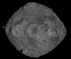
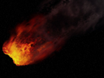
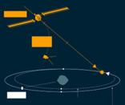

Los asteroides no son sólo objetos astronómicos compuestos principalmente de roca y metal que orbitan al Sol,
son piezas muy importantes que pueden eneñarnos mucho acerca de cómo comenzó a formarse nuestro sistema solar.
Se pueden clasificar con base en su órbita o en los materiales de los que están hechos, incluso hay todo un
protocolo para nombrar a alguno de estos objetos. Si deseas adentrarte en este tema y conocer más acerca de
estos interesantes objetos, te invitamos a explorar esta página dando click en el siguiente botón.
La fotometría es una de las técnicas más usadas en el estudio de los asteroides, ya que nos permite determinar
parámetros tan importantes como el periodo de rotación, la existencia de uno o más satélites, y el periodo de
cada uno de ellos, entre otros. Para conocer acerca de cómo es qué podemos determinarlos y cúales son algunos
de los softwares utilizados en esta técnica, puede visitar nuestra sección dedicada a este tema.
¿Alguna vez has tenido curiosidad por saber de qué están hechos los asteroides? Estos objetos no son sólo rocas
flotando en el espacio, están compuestos de distintos materiales, desde metales, componentes carbonáceos y silicatos,
pero, ¿cómo podemos saber de qué están hechos? ¿Lo que observamos nos muestra de qué se compone todo el asteroide o
sólo su superficie? La respuesta a ésta y otras preguntas las puede encontrar en nuestra sección de Espectroscopía.
Los asteroides han dejado una huella significativa en la cultura popular a lo largo de los años, ya sea como elementos de trama en películas y libros, como sujetos de investigación científica o como parte de la narrativa de la exploración espacial. Su representación en la cultura popular ha contribuido a una mayor conciencia pública sobre los asteroides y su potencial impacto en la Tierra.
¿Conoces cuáles son meteoritos más grandes que han impactado en territorio mexicano y en el mundo en general?
¿Sabes quiénes son los científicos más importantes que han impulsado el estudio de los asteroides?
¿Sabes si hay algún asteroide que tenga un acercamiento a la Tierra? Si deseas saber más acerca de estos temas,
te invitamos a explorar nuestra sección de Infografías.

Seguramente has leído alguna noticia sobre el posible impacto de un asteroide con la Tierra.
¿Te has puesto a pensar si en verdad podría ocurrir? ¿Sabes qué tan ciertas son estas noticias?
En nuestra sección Riesgo de impacto encontrarás información acerca de qué tan probable es que un
asteroide impacte con nuestro planeta y sus efectos.

¿Te gustaría saber cómo se lleva a cabo el estudio de los asteroides? ¿Deseas construir tu propia curva de luz?,
¿clasificar a los asteroides con base a sus órbitas o a su composición? ¿Quieres saber cómo nombrarlos? Esto y
más podrás encontrar en esta sección. Para ir a ella sólo da click en el botón de abajo y podrás encontrar
las distintas actividades que puedes realizar para entender mejor cómo se estudian estos objetos.
En esta sección podrás encontrar diversas palabras relacionadas con los asteroides; desde conceptos básicos
hasta algunos más específicos, relacionados, por ejemplo, con alguna técnica de observación.
Si desea saber más acerca de los asteroides, puede revisar nuestra sección Aprender más, donde podrá encontrar
algunos temas relacionados con el estudio de estos objetos, así como enlaces a páginas externas que te
llevarán a simuladores, videos de interés, conferencias y más.

.jpg)
{kind=link}